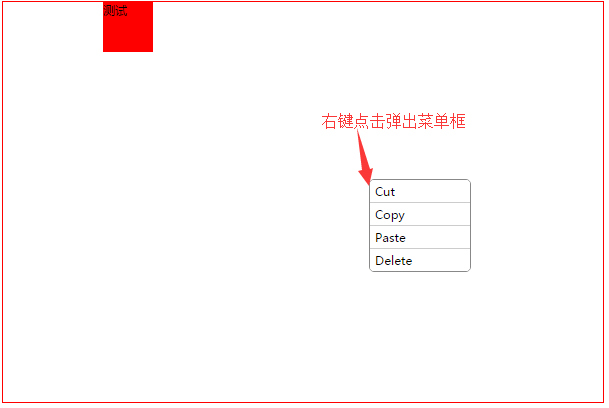

右键菜单
效果展示

使用
右键区域自适应父元素宽高,区域内容直接放在组件<right-click-menu>内
左键点击组件区域菜单关闭
- props:
menuList 菜单列表数组
- Event:
- 子菜单点击返回两个数据：
- 子菜单内容，@content
- 菜单索引 @index
- 子菜单点击返回两个数据：
例子：
<div style="width: 600px;height: 400px;border: 1px solid red">
<right-click-menu @content="getContent" @index="getIndex" :menuList="menu">
<div style="width: 50px;height: 50px;background-color: red;margin-left: 100px;">测试</div>
</right-click-menu>
</div>
methods: {
getContent(c) {
console.log(c) // 子菜单内容
},
getIndex(i) {
console.log(i) // 子菜单索引，0开始
switch (i) { // 子菜单点击处理
case 0:
...
}
}
},